Instituto Politécnico Nacional Escuela Superior de Cómputo
Trabajo Terminal 2026-A114
Simulación de sistemas complejos mediante autómatas celulares neuronales
Presenta
Angeles Lopez Erick Jesse
Director
Dr. Juárez Martínez Genaro
Diciembre, 2026
Contenido
Del sistema a la regla
Autómata celularConjunto de células que actualizan su estado con una función de transición que depende de los estados de sus vecinas.
Enfoque tradicional
Regla→Evolución→Análisis
Este trabajo
Evolución observada→Perceptrón multicapa→Regla local
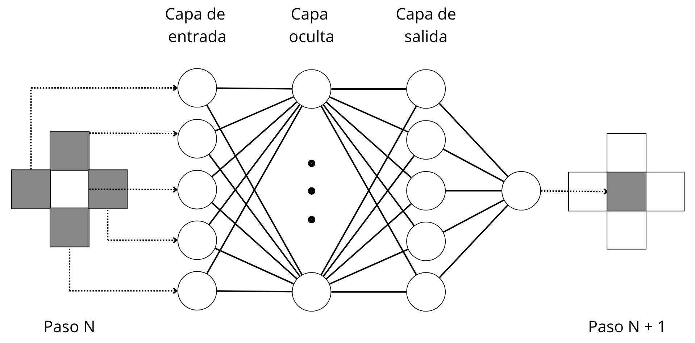
La red neuronal toma la vecindad en el paso N y da el estado de la célula en el paso N + 1.
Hipótesis
Si la función de transición de un autómata celular se define mediante una red neuronal entrenada con la evolución de un sistema, entonces es posible inferir una regla local que reproduzca dicha evolución.
Constante (0.001): baja hasta cerca de 150 épocas y después oscila.
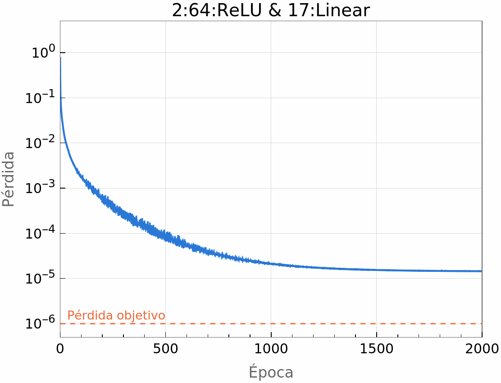
Exponencial (de 0.001 a 0.000001 en 2,000 épocas): no oscila, pero se frena en 0.000015.
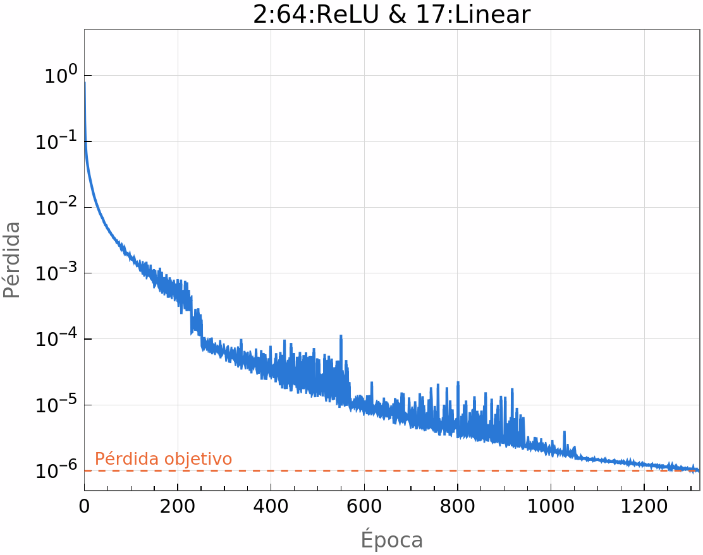
Plateau (÷ 2 si la pérdida no mejora en 20 épocas): llega en 1,319 épocas.
Cómo se midió
Exactitud: predicciones correctas en los datos de entrenamiento.
Resultado:A = 100% con las tres tasas; solo plateau llega a la pérdida objetivo (10−6).
Sandpile: codificación one-hot
012345678910111213141516arenageneradora
Un vecino en el estado 9 (generadora con un grano):
Entrada cruda9
One-hot00000000010000000
Sin one-hot, la red trata a 7 (arena) y 8 (generadora vacía) tan cerca como a 0 y 1.
Entrada cruda
1,319 épocas
301.47 s · t* = 3,241
One-hot
21 épocas
5.67 s · t* > 10,000
Cómo se midió
Primer paso de la simulación libre con alguna célula distinta (un generador en 25 × 25). Ambas entradas llegan a A = 100%.
Red one-hot, dos generadores en 51 × 51 con frontera abierta: dt = 0 en 20,000 pasos.
Regla aprendida17 estados · 5 vecinos (von Neumann)
14293526972876167914…12151046355733834374
1,747,062 dígitos. Reproduce sin error 2,000 pasos de las dos evoluciones de entrenamiento.
Vector de regla
175 = 1,419,857 entradas
Espacio de reglas
171,419,857
Hormiga de Langton
Regla RLRed 2:8:ReLU & 10:LinearOne-hot36 épocas
Desbalance: en 100 × 100 con una hormiga solo cambian 2 de cada 10,000 células por paso.
Colisión de dos hormigas, nunca vista con una sola: la red elimina una de ellas, siempre igual.
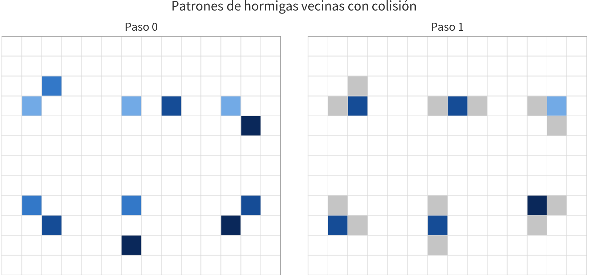
Patrones de colisión: en el paso 1 solo queda una hormiga.
13,000
pasos con dt = 0, una hormiga
20,000
pasos con dt = 0, dos hormigas
dt: células distintas entre el original y la red en el paso t.
Una hormiga, regla RL, 100 × 100: original (izq.) y red (der.).
Hormiga de Langton: más colores
Colores
Estados
Regla
Épocas
Tiempo
2
10
RL
22
25.6 s
3
15
RLL
63
73.8 s
4
20
RLLR
16
20.0 s
5
25
RLRLL
44
51.3 s
6
30
RRRLLL
68
75.4 s
7
35
RLRLRLL
77
85.7 s
8
40
RLRLRLRR
63
70.4 s
9
45
RLRLRLLRL
63
73.7 s
10
50
RLRLRLRRRL
87
97.3 s
Entrenamiento con dos hormigas en 30 × 30 durante 10,000 pasos; red 4:64:ReLU & 5n:Linear con one-hot.
10 colores, una sola hormiga en 100 × 100: coincide hasta el paso 12,455, donde la hormiga de la red se divide en dos.
Regla aprendida · RL10 estados · 13 vecinos (rombo de radio 2)
56111151155611111115…00000000000000000000
1013 dígitos (diez billones): con 10 estados, cada entrada del vector es un dígito.
Vector de regla
1013 entradas
Espacio de reglas
101013
Configuración base del autómata celular neuronal
4
Vecindadun poco mayor que la intuición inicial
→
1
001000
Entrada one-hotuna entrada por estado de cada vecino
→
2
Pocas capas ocultas anchasReLU
→
2
Salida linealuna neurona por estado
→
Siguiente estadola salida con mayor valor
3
Tasa de aprendizaje con plateause divide entre 2 cuando la pérdida deja de mejorar
5
Reproducir miles de pasos no garantiza la regla exactaen sandpile y en la hormiga de Langton las evoluciones coinciden hasta una configuración límite y luego divergen
Propagación del fuego (FLAME 3): datos
Videos térmicos de un dron con vista cenital.
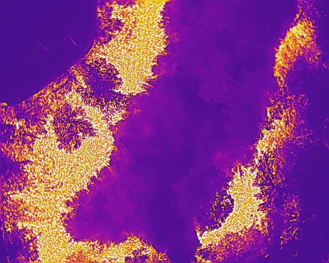
Original→
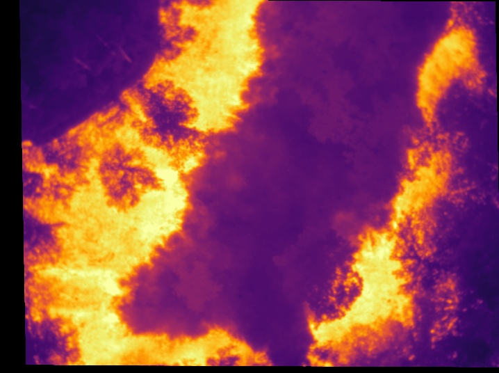
Ajuste de posición→
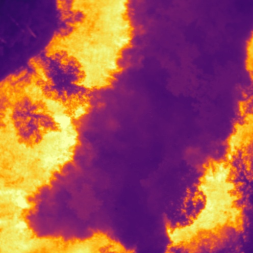
Sin ruido en los bordes→100 × 100→
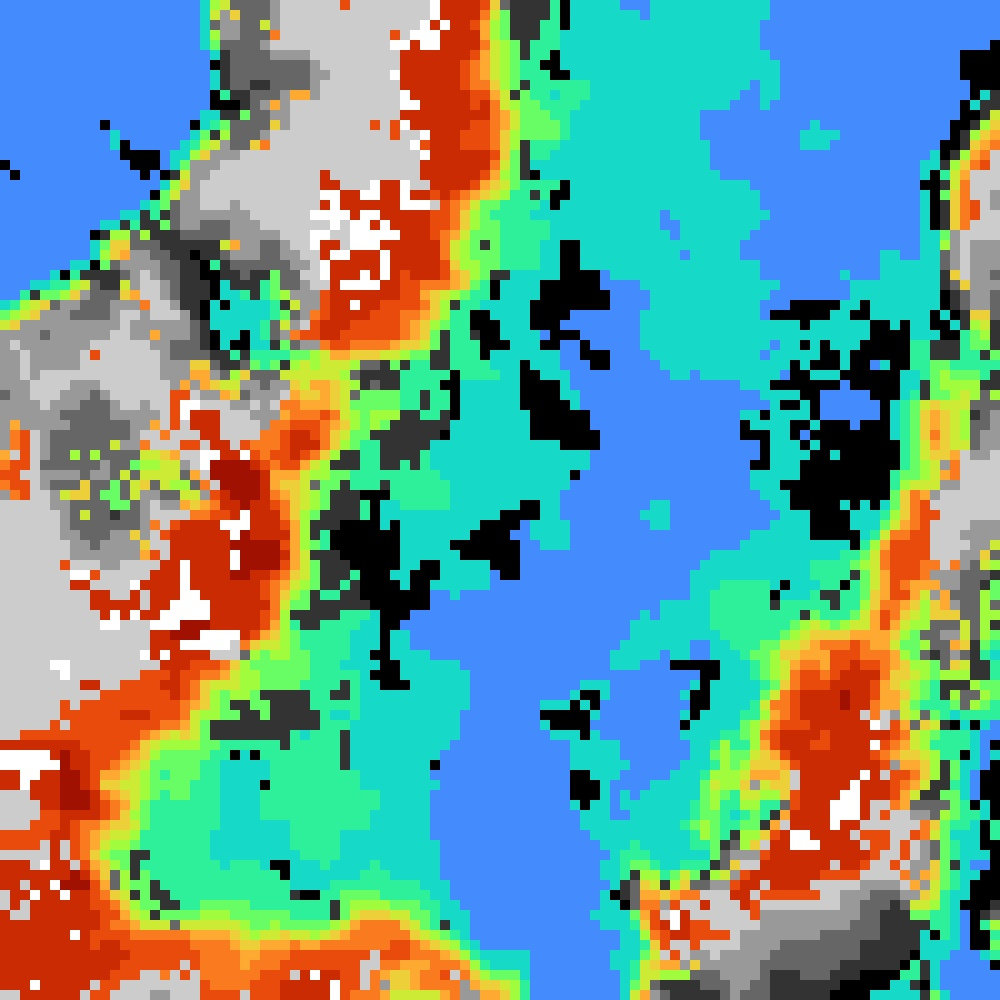
18 estados
01234567891011121314151617
Sin quemar · 12 intervalos de 25.3 a 604.6 °C
Quemado · los mismos, de dos en dos
Si la temperatura de una célula baja, pasa a quemada. Solo vuelve a encenderse si sube más de 30 °C sobre la mínima registrada desde que se quemó: el sistema recuerda el combustible consumido.
Propagación del fuego (FLAME 3): resultados
LimitacionesPocos datos: dos videos con dinámicas distintasSin relieve, carreteras, vegetación ni dirección del viento
flame_plot_1 (red entrenada con flame_plot_2): real (izq.) y simulación libre (der.)flame_plot_2 (red entrenada con flame_plot_1): real (izq.) y simulación libre (der.)
plot_1
plot_2
Área quemada (J)
85%
30%
Área con fuego (J)
55%
27%
E simulación libre
147%
97%
E un paso
110%
89%
Cómo se midió
Coincidencia del área quemada (Q: quemadas al final) y del área con fuego (Q: alguna vez a 130 °C).
Error absoluto medio: cuántos °C se equivoca, en promedio, cada célula (T̂ simulada, T real).
Comparado con suponer que nada cambia: menos de 100% es mejor.
Propagación del fuego (FLAME 3): lo que reproduce
Inicia con una chispa.
Los frentes se extinguen al chocar.
Lo quemado no se vuelve a encender.
Regla aprendida18 estados · 81 vecinos (9 × 9) · 2:32:ReLU · paso de 30 s
No calculable
Tendría ≈ 5.97 × 10101 dígitos.
Vector de regla
1881 ≈ 4.75 × 10101 entradas
Espacio de reglas
181881
Movimiento de tormentas (SEVIR)
En la simulación libre, la red desplaza la tormenta hacia un lado y la desvanece.
Sistema abierto: viento, humedad y nubes que entran por los bordes.
Medida
Red
Sin cambio
A, un paso
90.34%
87.79%
J, un paso
82.67%
77.98%
J, simulación libre a 60 min
41.83%
31.78%
J, simulación libre a 120 min
28.84%
20.02%
Cómo se midió
Exactitud (A) y área con tormenta (T: células con VIL de tormenta, estado 2 o mayor) en 200 tormentas de 2019 que la red no vio.
Evolución real y simulación libre de la mejor red (11 × 11, 16:64:ReLU, 400 tormentas).
Moho en una caja de Petri con hojuelas de avena: sistema cerrado.
0 · Exterior
3 · Moho tenue
1 · Fondo de la caja
4 · Moho medio
2 · Avena
5 · Moho intenso
0.120
C, paso de 30 min
0.223
C, paso de 6 h
0.04–0.06
predicción sin cambio
Cómo se midió · estado más probable
Coincidencia del plasmodio: posición por cantidad, promediada en todos los pasos. Rt, St: células con moho en la evolución real y en la simulación.
Evolución real
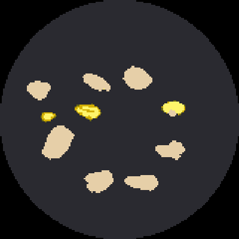
Estado más probable (paso de 30 min): se estanca cerca del inóculo
Physarum polycephalum: muestreo y sesgo
Evolución real Caja 5 del experimento 008, 50 h.
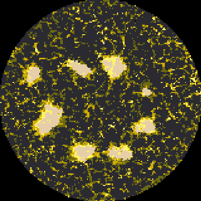
Muestreo: brotes en toda la caja A las 6 h cubre del 9 al 13% (real: del 1.5 al 7.8%).
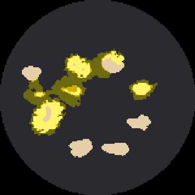
Sesgo de crecimiento (paso de 6 h): manchas sin ramas Moho al final 35.3% (real 34.4%), pero borde B = 0.154 (real 0.429).
Physarum polycephalum: ruido
Cada uno de los 6 estados se divide en 4 subestados de ruido: 24 estados.
El ruido cambia con una versión en dos dimensiones de la regla 30: determinista, pero se comporta como aleatorio.
El moho crece desde el inóculo, se ramifica hacia la avena y, al tocarla, la coloniza.
Real
Sesgo
Ruido
Ruido + edad
C
—
0.225
0.105
0.159
Moho al final
34.4%
35.3%
15.7%
33.0%
B
0.429
0.154
0.498
0.387
Cómo se midió
Borde del plasmodio: alto = ramas, bajo = manchas. C es la coincidencia del plasmodio definida antes.
Caja 5 del experimento 008: evolución real y simulación libre de la red con ruido y memoria de edad. La red da un paso cada 6 h; entre pasos, los cuadros son una transición.
Regla aprendida · ruido + edad36 estados · 113 vecinos (círculo de radio 6) · 16:128:ReLU
No calculable
9 estados visibles × 4 de ruido; el ruido y la edad forman parte del estado, así que la regla es determinista. Tendría ≈ 1.13 × 10176 dígitos.
Vector de regla
36113 ≈ 7.28 × 10175 entradas
Espacio de reglas
3636113
Wolfram Summer School 2025
Adaptive Evolution in Totalistic Cellular Automaton · Bentley University, EUA · mentoría de Willem Nielsen
Evolución adaptativa para encontrar reglas con comportamientos similares en autómatas celulares totalísticos: recocido simulado con mutaciones de Poisson sobre el vector de regla.
Formas de vida finitas: desde una sola célula activa, la evolución se extingue después de un número finito de pasos.
Cambiar un elemento del vector mantiene la regla en la misma familia de comportamiento, como B3/S23 y B3/S238.
Por eso la red puede converger a una regla vecina que coincide durante más de 10,000 pasos.
Wolfram Community · Staff PicksWolfram Technology Conference 2025Citado en What's Special about Life? (S. Wolfram)
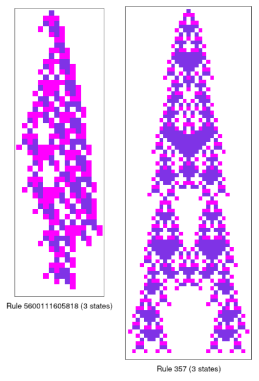
Formas de vida finitas de dos reglas de 3 estados.
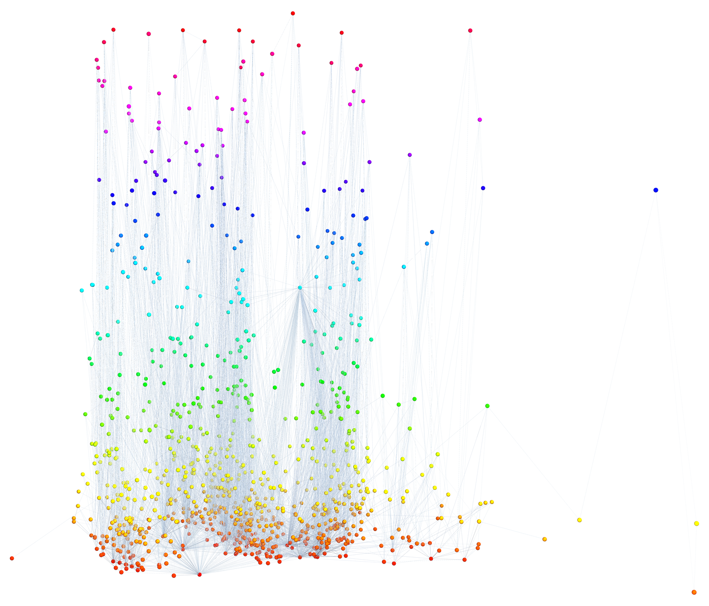
Grafo de mutaciones.
Indian Summer School on Cellular Automata 2026
Spectral Moments with Attractor Mass: A Similarity Index for One-Dimensional Cellular Automata · con Sukanta Das · IIEST Shibpur, India
¿Qué tan similares son dos reglas cercanas? Por ejemplo, B3/S23 frente a B3/S238 y B3/S236.
Grafo de transiciones: cada configuración es un nodo; los árboles transitorios desembocan en ciclos (cuencas de atracción).
Momentos espectrales con masa de atractor: cada N pasos, la fracción de configuraciones que ya alcanzó su ciclo.
87 de 88
clases de autómatas celulares elementales que distingue
281
nodos en una rejilla de 9 × 9 (29 con 9 células): el límite del análisis exacto
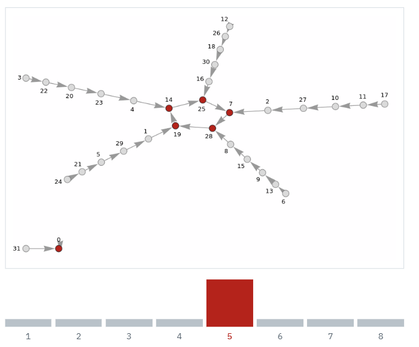
Regla 30 con 5 células: 32 configuraciones, un punto fijo y un ciclo de periodo 5.
¿Se cumple la hipótesis?
Experimento
Tipo de sistema
Hipótesis
Observación
Juego de la vida
Cerrado, determinista
Se cumple
Reproducción exacta
Sandpile
Cerrado, determinista
Se cumple
Con un solo generador
Hormiga de Langton
Cerrado, determinista
Se cumple
Hasta 10 colores (50 estados)
FLAME 3
Natural, faltan variables
Parcial
Avance y extinción; sin relieve ni clima
Physarum polycephalum
Natural, cerrado
Parcial
Red conectada hacia el alimento y área casi real; venas más gruesas
SEVIR
Natural, abierto
No se cumple
Variables atmosféricas externas a la rejilla
Aportación tecnológicaSimulador de autómatas celulares clásicos y neuronales en CUDA, con su propio flujo de entrenamiento.
Aportación metodológicaConfiguración práctica para entrenar autómatas celulares neuronales.
AdvertenciaReproducir la evolución observada no equivale a extraer la función de transición exacta.
Conclusiones
01
Inferencia de la regla
La red extrae la parte de la regla que aparece en los datos: el juego de la vida no falla en ninguno de los 512 patrones. Ante patrones que no vio puede fallar (sandpile con varios generadores, hormiga de Langton en el paso 12,455).
02
Configuración de la red
Pocas capas anchas con ReLU y salida lineal, entrada one-hot cuando hay más de dos estados y una vecindad que contenga a todos los vecinos que influyen.
03
Parámetros de entrenamiento
Con un entrenamiento incompleto, la pérdida objetivo determina qué regla se aprende (B3/S238 → B3/S23). Reducir la tasa de aprendizaje permite alcanzarla sin oscilaciones.
04
Sistemas reales
El sistema debe ser cerrado (su evolución depende solo de los estados de las células), tener datos suficientes y registrar en el estado las variables que influyen.
Trabajo a futuro
01
Memoria temporal
La edad del plasmodio ya mejoró Physarum polycephalum; falta guardar más pasos y probarla en FLAME 3 y SEVIR.
02
Generalización
Ante patrones poco frecuentes, y una distancia formal entre el vector de regla original y la regla inducida por la red.
03
Autómatas celulares continuos
Con valores reales y dinámicas probabilísticas.
04
Simulador en una y tres dimensiones
Relieve en modelos de incendios y otros tipos de vecindad.
05
Morfogénesis
Entrenar solo con la configuración inicial y la final, como Mordvintsev et al., pero con estados discretos y escalares, y actualización determinista.
Referencias
A. Mordvintsev, E. Randazzo, E. Niklasson y M. Levin, “Growing Neural Cellular Automata,” Distill, 2020, doi: 10.23915/distill.00023.
“Conway's Game of Life,” LifeWiki. [En línea].
P. Bak, C. Tang y K. Wiesenfeld, “Self-organized criticality: An explanation of the 1/f noise,” Phys. Rev. Lett., vol. 59, no. 4, pp. 381–384, 1987.
R. Menchaca Méndez, “Control de Autómatas Celulares con Aprendizaje Reforzado Profundo,” conferencia virtual, CIMA UAdeC, 2022.
“Langton's Ant,” Wikipedia, The Free Encyclopedia. [En línea].
B. Hopkins et al., “FLAME 3 Dataset: Unleashing the Power of Radiometric Thermal UAV Imagery for Wildfire Management,” arXiv:2412.02831, 2024.
M. S. Veillette, S. Samsi y C. J. Mattioli, “SEVIR: A Storm Event Imagery Dataset for Deep Learning Applications in Radar and Satellite Meteorology,” en NeurIPS, vol. 33, pp. 22009–22019, 2020.
K. Harrington e I. Harrington, “Physarum polycephalum time-lapse imaging: 24 dish series from four six-dish experiments (OME-Zarr),” Zenodo, 2026, doi: 10.5281/zenodo.22868368.
S. Wolfram, “Why Does Biological Evolution Work? A Minimal Model for Biological Evolution and Other Adaptive Processes,” Stephen Wolfram Writings, 2024.
S. Wolfram, “What's Special about Life? Bulk Orchestration and the Rulial Ensemble in Biology and Beyond,” Stephen Wolfram Writings, 2025.
E. J. Angeles Lopez, “[WSS25] Adaptative Evolution in Totalistic Cellular Automaton,” Wolfram Community, 2025.
J. Hurtado et al., “Exploring Finite Lifeforms in Totalistic Cellular Automata,” Wolfram Community, 2024.
E. J. Angeles Lopez y S. Das, “Spectral Moments with Attractor Mass: A Similarity Index for One-Dimensional Cellular Automata,” enviado al Asian Symposium on Cellular Automata Technology (ASCAT 2027), 2026.
G. J. Martínez, “A Note on Elementary Cellular Automata Classification,” J. Cell. Autom., vol. 8, no. 3–4, pp. 233–259, 2013.
¡Gracias!
Preguntas y comentarios
Angeles Lopez Erick Jesse Trabajo Terminal 2026-A114 · ESCOM, IPN
Requerimientos y equipo de simulación
Software
Herramienta
Versión
Sistema operativo
Fedora Linux 44
Compilador C++
GCC 15 (para nvcc)
CUDA Toolkit
13.2
CMake
≥ 3.15
Python
3.14
pybind11
Última versión estable
PyQt5
5.15
NumPy · SciPy
≥ 1.24 · ≥ 1.10
PyTorch
2.x con soporte CUDA
Equipo donde se simuló y entrenó
Procesador
Intel Core i9-14900K (24 núcleos, 32 hilos)
GPU
NVIDIA GeForce RTX 5080 (16 GB)
Memoria
32 GB de RAM
Sistema
Fedora Linux 44 · GNOME 50 · Hyprland
Mínimo probado
Procesador
Intel Core i5-13420H (8 núcleos, 12 hilos)
GPU
NVIDIA con CUDA, como la RTX 4050 para portátiles
Memoria
16 GB de RAM
Sistema
Fedora Linux 44 · GNOME 50 · Wayland
El mínimo es la configuración más baja en la que se probó; la velocidad depende de la GPU.
Detalles del simulador
Autómata celular
Espacios de hasta 2,000 × 2,000 células.
Reglas semitotalísticas, totalísticas y arbitrarias.
Cuatro condiciones de frontera: abierta, periódica, reflectiva y reflexiva.
Un paso de evolución en paralelo en la GPU (CUDA).
Buffer de pasos precalculados en otro hilo para que la reproducción no se detenga.
Lógica y núcleo programados sin bibliotecas de simulación; conectados a Python con pybind11 (patrón Modelo-Vista-Controlador).
Autómata celular neuronal
Usa el mismo espacio que el autómata celular.
El kernel NCA ejecuta en CUDA el forward pass del perceptrón multicapa en cada célula; el siguiente estado es la salida con mayor valor.
Carga el archivo .npz: capas, funciones de activación y codificación one-hot.
Da el mismo resultado, célula por célula, que el entrenamiento en PyTorch.
Pruebas de rendimiento
10,000 pasos en 1,000 × 1,000
0.07 s en la GPU
5.6 s si se copia y muestra cada paso
2,000 × 2,000 · 4 millones de células
122 fps
al dibujar; la GPU calcula 55,400 pasos/s
Requerimiento: 10,000 células/s
2.1 × 109 células/s
2,000 × 2,000 mostrando cada paso
Simulador · B3/S23 con 50% de células vivas
n × n
Pasos/s en la GPU
Pasos/s mostrados
10,000 pasos mostrados
fps al dibujar
100
345,000
102,800
0.1 s
1,515
500
313,000
6,500
1.5 s
1,125
1,000
137,000
1,800
5.6 s
353
2,000
55,400
520
19 s
122
En la GPU: step(), solo el kernel. Mostrados: run(100), con la copia de la GPU a la memoria en cada paso.
Entrenamiento de las redes finales
Experimento
Épocas
Tiempo
Juego de la vida
5
2.3 s
Sandpile
21
7.5 s
Hormiga de Langton
22
27 s
FLAME 3
200
12 s
SEVIR
30
87 s
Physarum
30
173 s
Pruebas de validación
Autómata celular
La misma condición inicial en el simulador y en otra implementación, con las mismas condiciones.
Correcto si la diferencia es 0 en cada paso.
Autómata celular neuronal
Evolucionar T pasos → entrenar → cargar los pesos en el simulador → evolucionar desde la misma condición inicial.
Correcto si coincide más del 99% de las células.
Interfaz · pruebas manuales
Definir una regla desde cero.
Pintar, borrar y aleatorizar el espacio.
Grabar, exportar a .npy y .mat y reimportar.
Cargar una red y cambiar entre CA y NCA.
Entrenar desde la pestaña y leer su salida.
Juego de la vida
512 de 512 patrones
Sandpile
100% de exactitud
Hormiga de Langton, 2 a 10 colores
8 de 9 redes sin errores
RobustezCUDA_CHECK en cada llamada a CUDATablas de regla de hasta 16,777,216 entradasSe descartan los pasos precalculados obsoletos
Diagrama de casos de uso
Diagramas de clases
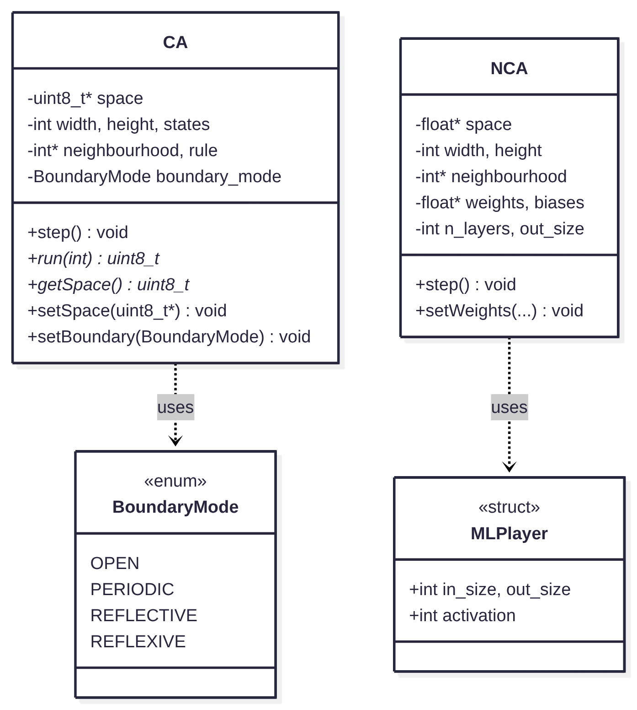
Capa CUDA
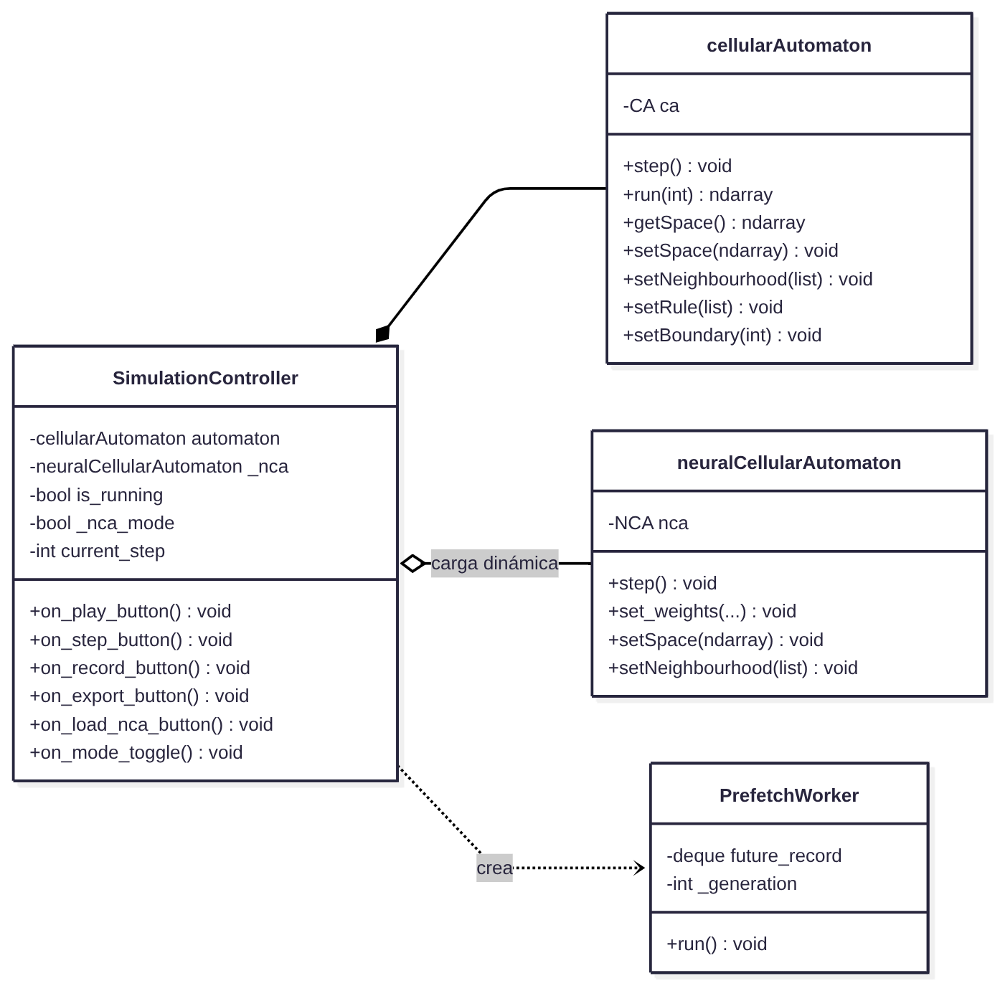
Capa de modelos
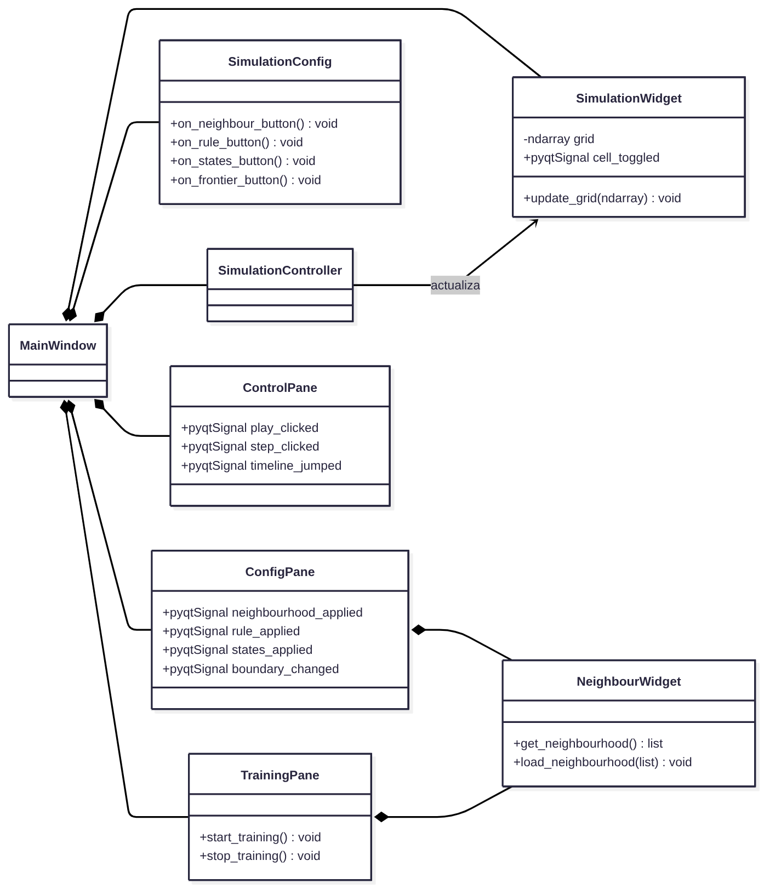
Capa UI
Controles de la interfaz
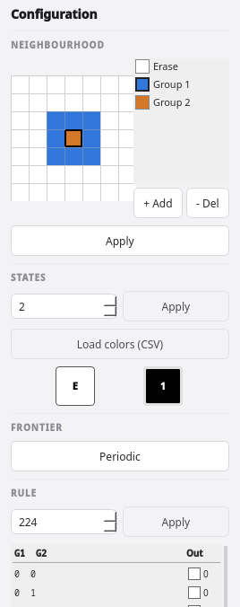
Controles de configuración.Controles de definición del entrenamiento.
Experimentos clásicos: datos y estados
Las evoluciones se generan con la regla original, así que no necesitan limpieza; el reto es el desbalance.
Experimento
Evoluciones
Estados
Desbalance
Juego de la vida
100 condiciones aleatorias de 100 × 100, 100 pasos
2: muerta y viva
C1N8 y C0N8 suman menos del 0.02% de los patrones
Sandpile
100 condiciones aleatorias con 4 generadores en 50 × 50, 1,500 pasos
17: 8 alturas (0–7) y 9 de generador (0i–8i)
Solo 4 de 2,500 células son generadoras
Hormiga de Langton
Una hormiga en 100 × 100, 11,000 pasos. Con n colores: dos hormigas en 30 × 30, 10,000 pasos
5n: n colores y 4 direcciones por color
Cambian 2 de cada 10,000 células por paso
El juego de la vida: vecindad ampliada sin un vecino
Vecindad
Pérdida
3 × 3 sin el vecino noroeste
0.1214
7 × 7 sin el vecino noroeste
0.0984
9 × 9 sin el vecino noroeste
0.0976
3 × 3 sin el centro
0.0787
7 × 7 sin el centro
0.0670
9 × 9 sin el centro
0.0660
Agrandar la vecindad baja la pérdida, pero no alcanza a recuperar el vecino que falta.
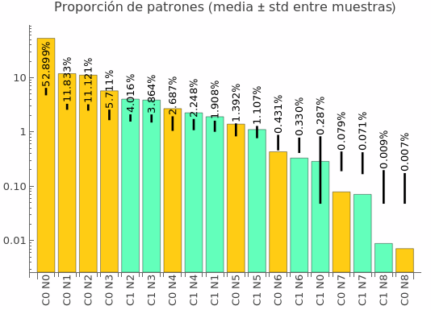
Frecuencia de los patrones CxNy en B3/S23.
Sandpile con frontera periódica
La misma red (entrenada con frontera abierta) falla en el paso 13,032 y pierde el generador en el 13,057.
Con dos generadores contiguos, que nunca vio, coincide durante 1,882 pasos en 25 × 25.
Un generador, 51 × 51, frontera periódica.
Hormiga de Langton fuera del entrenamiento
Ocho hormigas en posiciones al azar, regla RL (red entrenada con dos hormigas en 30 × 30): t* = 639.10 colores, dos hormigas en 100 × 100: t* = 5,073.
Con dos hormigas RL en posiciones al azar: 20,000 pasos sin errores.
FLAME 3: preprocesamiento
1Selecciónflame_plot_1 (imágenes 662–777, 116 cuadros) y flame_plot_2 (1189–1254, 66 cuadros): propagación a velocidad constante que ya empieza con fuego, para que la red no aprenda combustión espontánea.
2Ajuste de posiciónCorrelación de fase (1/20 de píxel) solo sobre el suelo frío, entre imágenes a 1, 2, 4, …, 128 de distancia; mínimos cuadrados robustos (Huber) e interpolación bilineal. Corrección máxima: 6.57 y 7.69 píxeles.
3Sin ruido en los bordesSe recorta el mayor cuadrado sin píxeles vacíos en toda la secuencia.
4EscaladoConvolución hasta 100 × 100 células.
5DiscretizaciónSobre los TIFF, que guardan la temperatura de cada píxel: 12 intervalos logarítmicos de 25.3 a 604.6 °C y 6 estados de quemado que recuerdan el combustible consumido.
FLAME 3: estados de temperatura
Sin quemar
0
25.3–59.0 °C
1
59.0–72.9 °C
2
72.9–90.1 °C
3
90.1–111.4 °C
4
111.4–137.6 °C
5
137.6–170.0 °C
Sin quemar
6
170.0–210.0 °C
7
210.0–259.5 °C
8
259.5–320.6 °C
9
320.6–396.1 °C
10
396.1–489.3 °C
11
489.3–604.6 °C
Quemado
12
25.3–72.9 °C
13
72.9–111.4 °C
14
111.4–170.0 °C
15
170.0–259.5 °C
16
259.5–396.1 °C
17
396.1–604.6 °C
Los 6 estados de quemado agrupan los 12 intervalos de dos en dos.
FLAME 3: modificaciones probadas
Modificación
Resultado
Tomar una imagen de cada 1, 3 o 6
Con 6 (30 s) la red supera a la predicción sin cambio.
Número de estados (4 a 50)
Reduce el error de cuantización, no el de la dinámica.
Quitar la ignición
Casi ninguna red enciende células.
Rotar las imágenes
Baja el error de un paso; la simulación libre no mejora.
Combustible como clase fija
La red casi no enciende células.
Bandera de quemado (umbral fijo)
5 veces más células encendidas, muchas falsas.
Quemado al enfriarse
La red propaga el fuego (representación final).
FLAME 3: mejores configuraciones en cada prueba
Paso
Vecindad
Capas
Área quemada
Área con fuego
Error simulación libre
Error de un paso
Prueba en flame_plot_1 (entrenadas con flame_plot_2)
15 s
Dispersa
3:64
86%
68%
404%
113%
30 s
Dispersa
3:64
86%
67%
140%
119%
30 s
9 × 9
2:32
85%
55%
147%
110%
Prueba en flame_plot_2 (entrenadas con flame_plot_1)
15 s
9 × 9
4:256
67%
61%
89%
105%
5 s
Dispersa
4:256
61%
52%
77%
117%
30 s
9 × 9
2:32
30%
27%
97%
89%
Errores respecto a la predicción sin cambio (menos de 100% es mejor). La configuración final es la de 30 s, 9 × 9 y 2:32.
SEVIR: preprocesamiento
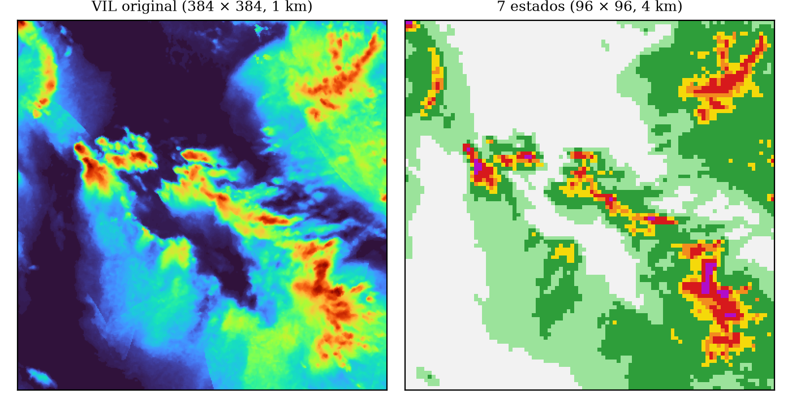
Estado0123456
1EscaladoDe 384 × 384 a 96 × 96 promediando bloques de 4 × 4: cada célula mide 4 km y una tormenta avanza cerca de una célula por paso (5 min).
2DiscretizaciónLos 6 umbrales de los autores (16, 74, 133, 160, 181 y 219 de 255) dan 7 estados; hay tormenta desde el estado 2.
3Selección de eventosSolo eventos con al menos 2% de tormenta desde la primera imagen: 40 de entrenamiento y 20 de prueba; en el barrido, 1,996 y 200.
4Transiciones al azar40 tormentas completas con vecindad de 11 × 11 ocupan cerca de 9 GB, así que de cada tormenta se toman solo algunos pares de imágenes.
SEVIR: barrido y desplazamiento
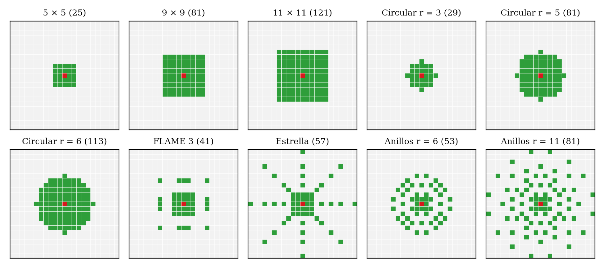
Vecindades probadas.
Desplazamiento al este (60 min)
Variación E–O / N–S
Real
5.82 células (23 km)
7.06 / 7.18
Red
7.17 células (29 km)
4.49 / 4.04
SEVIR (MIT Lincoln Laboratory) tiene más de 10,000 eventos; se seleccionaron 1,996 tormentas.
La red mueve casi todas las tormentas hacia el este con mucha menos variación que las reales. El límite no depende de la cantidad de datos, del tamaño de la red ni de la vecindad.
Physarum polycephalum: preprocesamiento
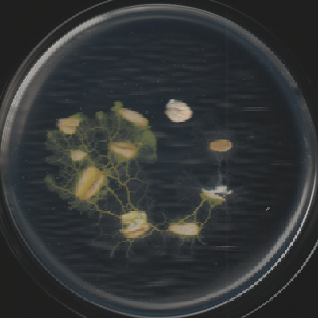
Original→
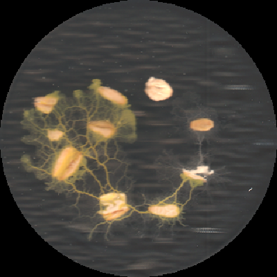
Limpia→
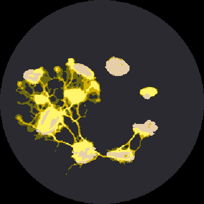
6 estados (320 × 320)→
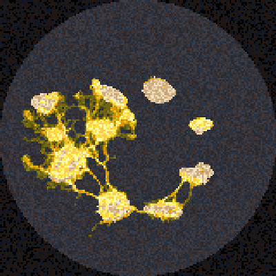
24 estados con ruido (160 × 160)
1RecorteEl mismo círculo en todas las imágenes (se mueven hasta 36 píxeles) y solo el 90% de la caja, sin los reflejos de la pared.
2Mediana temporalCada imagen es la mediana de las de ±5 min; después se corrige la iluminación del fondo.
3SegmentaciónEn CIELAB: el canal amarillo (b*) separa el plasmodio tenue, medio e intenso; la avena es una máscara de la primera imagen.
4ReducciónDe 320 × 320 a 160 × 160 con el estado más común de cada bloque de 2 × 2.
5Filtro de persistenciaUn cambio se acepta solo si dura dos imágenes; sin él, el 28% de los cambios se revierte.
6DivisiónLa caja 5 de cada experimento es de prueba y las otras 20, de entrenamiento.
Physarum polycephalum: regla del ruido
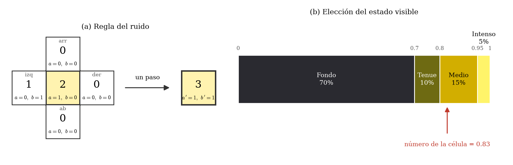
(a) La célula central tiene ruido 2 y, con la regla del ruido, pasa a 3. (b) La red da la probabilidad de cada estado visible y el número de la célula (0.83), calculado con el ruido de sus 9 × 9 vecinos, elige plasmodio medio.
En un paso la red acierta el estado visible del 99.17% de las células y el ruido del 99.98%.
Sin memoria, no forma las venas largas que unen la avena ni sabe cuándo dejar de crecer.
Physarum polycephalum: ruido con memoria de edad
A 6 h, el plasmodio que acaba de llegar se retira 4.7 veces más que el establecido (35% contra 7%).
Cada nivel de plasmodio se divide en nuevo y establecido: 9 estados visibles × 4 de ruido = 36.
Forma una red conectada entre la avena, aunque con venas más gruesas que las reales.
Real
Sesgo
Ruido
Ruido + edad
C
—
0.225
0.105
0.159
Moho al final
34.4%
35.3%
15.7%
33.0%
B
0.429
0.154
0.498
0.387
Sin edad, la misma red da C = 0.137 ± 0.007; con edad, 0.155 ± 0.001 (3 semillas). Sin un experimento completo, supera a quedarse sin cambios y a llenar la caja en los 4 casos.
Caja 5 del experimento 008: evolución real y simulación libre de la red con ruido y edad (un paso cada 6 h; entre pasos, transición).
Physarum polycephalum: paso de tiempo y estado más probable
Con el estado más probable, el paso de tiempo es lo más importante: la coincidencia del plasmodio sube de 0.120 (30 min) a 0.223 (6 h).
La simulación crece en manchas sólidas y sin movimiento.
Evolución real y simulación con el estado más probable.
Indian Summer School: agrupamiento
Las 88 clases de autómatas celulares elementales se agrupan en 4 grupos según el periodo dominante de sus atractores.
k-medoides con 4 grupos, n = 12 células y ventana K = 60.